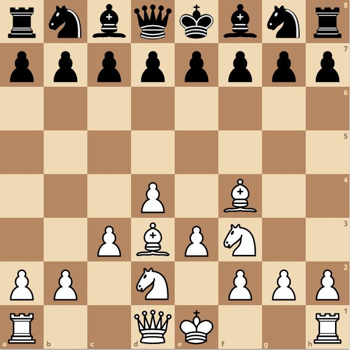
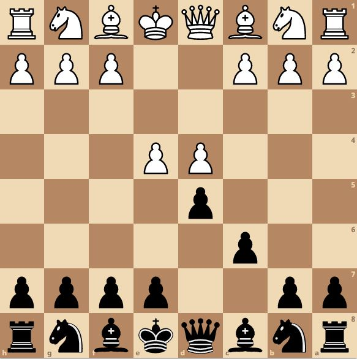

Chess Openings
Chess openings are specific first few moves that you make in the game. There are numerous openings which players try to study to get the better position before moving on into the middle game. To Learn about more openings click here
The London System
The London system is an opening for white and it is a "system" based opening which means it can be played against any of black's openings. The opening starts with the moves 1.d4 and 2.Bf4 3.e3 and can go in many direction from there but it usually ends up looking something like this:
The Caro-Kann Defence
The Caro-Kann Defence is characterized by the moves 1.e4 c6 and usually continuing with 2.d4 d5 from here on it could go into dozen different positions. This is the standard setup:
The Kings Indian Defence
The Kings Indian Defence starts with the moves 1.d4 Nf6 2.c4 g6. In this opening you let white take the center much earlier than you normally would but in return your position is very solid and hard to attack. This is how it looks in-game: